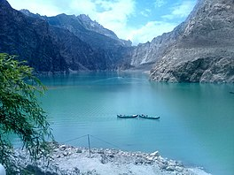
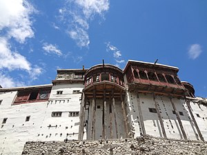
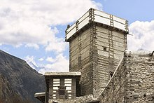
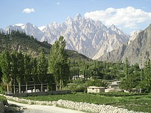

The Hunza Valley (Burushaski: ہنزو, Wakhi: shina; Urdu: ہنزہ) is a mountainous valley in the northern part of the Gilgit-Baltistan region of Pakistan, formed by the Hunza River, bordering Ishkoman to the northwest, Shigar to the southeast, Afghanistan's Wakhan Corridor to the north, and the Xinjiang region of China to the northeast. This picture is taken from Hunza which is located in the north of Gilgit.
![A beautiful view of Northern Pakistan]()
The Hunza Valley is a mountainous valley in the northern part of the Gilgit-Baltistan region of Pakistan, formed by the Hunza River, bordering Ishkoman to the northwest, Shigar to the southeast, Afghanistan's Wakhan Corridor to the north and the Xinjiang region of China to the northeast.[2] The Hunza Valley floor is at an elevation of 2,438 meters (7,999 feet). Geographically, the Hunza Valley consists of three regions: Upper Hunza (Gojal), Central Hunza, and Lower Hunza (Shinaki).
Attabad Lake (Urdu: عطا آباد جھیل) is a lake located in the Gojal region of Hunza Valley in Gilgit−Baltistan, Pakistan. It was created in January 2010 as the result of a major landslide in Attabad.[1][2] The lake has become one of the biggest tourist attractions in Gilgit−Baltistan, offering activities like boating, jet-skiing, fishing and other recreational activities.
The lake was formed when Attabad village in Hunza Valley in Gilgit−Baltistan had a landslide, 14 kilometres (9 mi) upstream (east) of Karimabad that occurred on 4 January 2010. The landslide killed twenty people and blocked the flow of the Hunza River for five months. The lake flooding displaced 6,000 people from upstream villages, stranded (from land transportation routes) a further 25,000, and inundated over 19 kilometres (12 mi) of the Karakoram Highway. The lake reached 21 kilometres (13 mi) long and over 100 metres (330 ft) in depth by the first week of June 2010 when it began flowing over the landslide dam, completely submerging lower Shishkat and partly flooding Gulmit.[3] The subdivision of Gojal has the greatest number of flooded buildings, over 170 houses, and 120 shops. The residents also had shortages of food and other items due to the blockage of the Karakoram Highway.[4] By 4 June, water outflow from the lake had increased to 100 m3/s (3,700 cu ft/s).[5] Water levels continued to rise in 18 June 2010 caused by a difference in the outflow and inflow of the new lake. As bad weather continued, the supply of food, medicine and other goods was stopped as all forms of transportation including helicopter service to Hunza could not resume.[6]
Baltit Fort (Urdu: قلعہ بلتت) is a fort in the Hunza valley, near the town of Karimabad, in the Gilgit-Baltistan region of northern Pakistan. Founded in the 8th century CE, it has been on the UNESCO World Heritage Tentative list since 2004
The Mirs of Hunza abandoned the fort in 1945, and moved to a new palace down the hill. The fort started to decay which caused concern that it might possibly fall into ruin. Following a survey by the Royal Geographical Society of London a restoration programme was initiated and supported by the Aga Khan Trust for Culture Historic Cities Support Programme. The programme was completed in 1996 and the fort is now a museum run by the Baltit Heritage Trust.[2
Altit Fort (Urdu: قلعہ التیت) is an ancient fort in the Altit town in the Hunza valley in Gilgit Baltistan, Pakistan. It was originally home to the hereditary rulers of the Hunza state who carried the title of 'Mir', although they moved to the somewhat younger Baltit fort nearby three centuries later.[1] Altit Fort and in particular the Shikari tower is around 1100 years old,[2][3] which makes it the oldest monument in the Gilgit–Baltistan. The fort has received the UNESCO Asia Pacific Heritage Award for Cultural Heritage Conservation in 2011.
The word 'Altit' means 'this side down' and the area around the fort is inhabited by Burusho people. In the 16th century the local prince married a princess from Baltistan who brought master Balti craftsmen to built two forts (Altit and Baltit forts). The people of Altit are said to belong to the White Huns, although not much research has gone into the matter. There are several theories about their origin but local indigenous origin holds much value among the people. It is also said[by whom?] that the present language Burushaski was brought here by the White Huns in 47 A.D but there is no link between Burushaski and any other language of today. According to the legend the first name for Altit village was Hunukushal, meaning the village of Huns.[4] The Huns came from the Huang-Ho valley in China. The name later changed to Broshal, translated as a village of Bruchiski speakers. They were spirit worshipers as Shamanism was in practice and also followed Buddhism and Hinduism. In the 15th century Islam was introduced. Around 1830 in turn many converted to Ismailism.
The Altit Fort was in great disrepair, but has recently been restored by the Aga Khan Trust for Culture Historic Cities Support Programme and the Government of Norway. It is characterized by small rooms and low portals with exquisite wood carvings. Altit Fort is a tourist site which has been open to the public since 2007
Gulmit (Wakhi/Urdu: گلمت), also known as Gul-e-Gulmit, is a town that serves as headquarter of the Gojal, also known as Upper Hunza, in Gilgit Baltistan, Pakistan. Gulmit is a centuries-old historic town, with mountains, peaks and glaciers. It is a tourist spot and has many historic places, hotels, shops and a museum.
Before 1974, when Hunza was a state, Gulmit used to be the Summer Capital of the state. After the abolition of the state it became the Tehsil's seat of government. The oldest intact house in Gulmit is more than six centuries old. Most of People in the entire Gojal Valley have Central Asian ancestral backgrounds. The people speak Wakhi language and belong to the Shia Imami Ismaili sect of Islam. Population of Gulmit, according to 2016 survey, consists of around 5000 individuals. Fifty-one percent of the population is female. There are many forts and fortresses in Gojal valley, such as Qalanderchi fort in Misghar valley and Rashit fort in Chipursan valley, but Ondra fort is the most prominent. This fort is perched on Ondra hill, which overlooks Gulmit and Ghulkin villages. The fort is believed to have been built by Qutlug Baig in the 16th century. He was the first Wakhi ruler to establish rule in Gulmit, threatening the Mirs of Hunza. Before him, Gulmit was under the control of Hazur Jamshid (1550-1556), who was the ruler of Gilgit. His sons Su Malik and Mir Malik were deputed to collect the tax from Gojal. Once, returning from a visit to collect tax from Yishkook in Chipursan valley, the two stopped in Gulmit and liked it. They decided to live in Gulmit. After the death of Hazur Jamshid, Su Malik, the elder son, rushed to Gilgit to sit on his father's throne. He became the new ruler of Gilgit (1556-1578). According to Muhammad Zia, celebrated genealogy-keeper (zon) of Gulmit, Mir Malik also eventually left for Hunza. Taking advantage of the absence of Su Malik and Mir Malik, Qutlug Baig with the help of locals captured Gulmit and the surrounding villages. Qutlug Baig belonged to the Charshambi Kator lineage of the Wakhis of Gulmit.